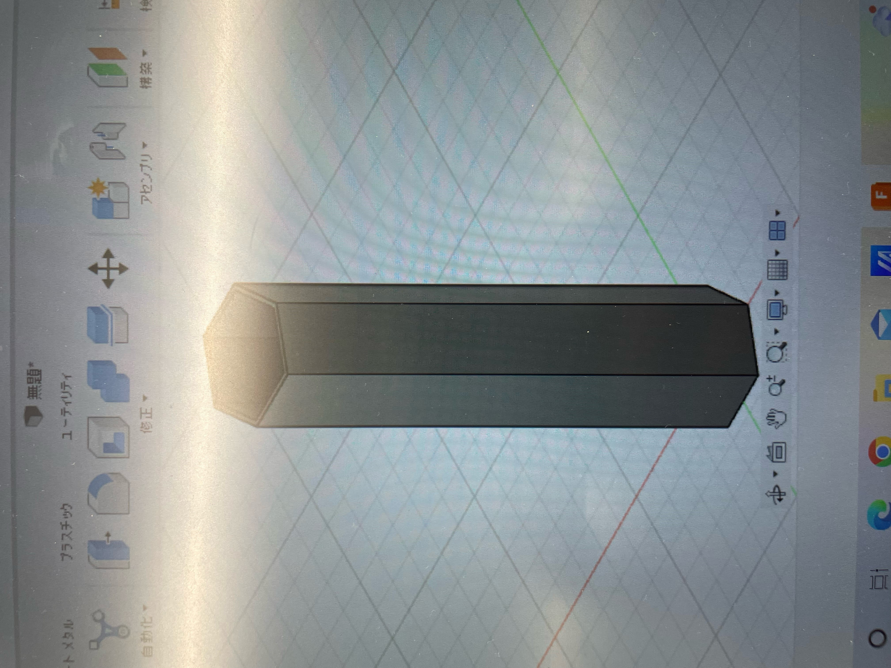
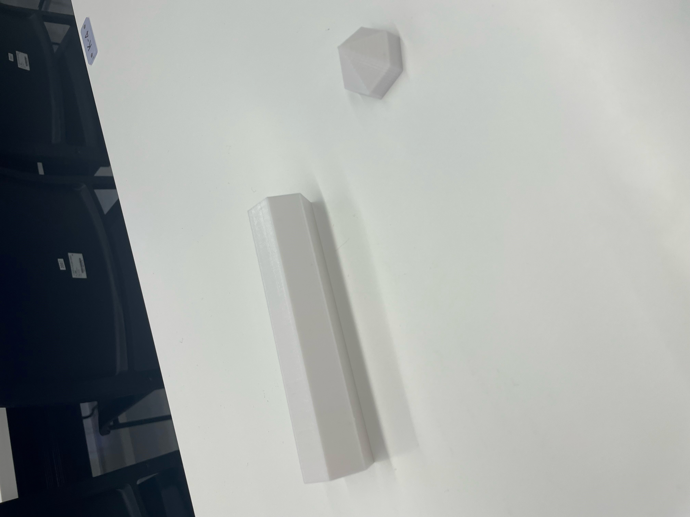
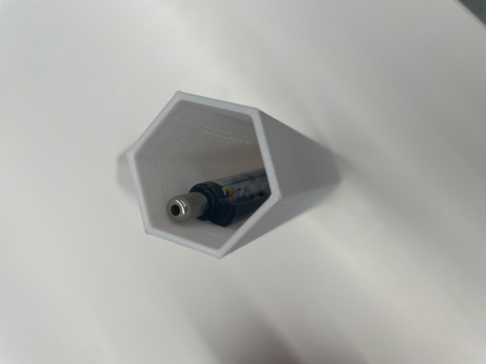
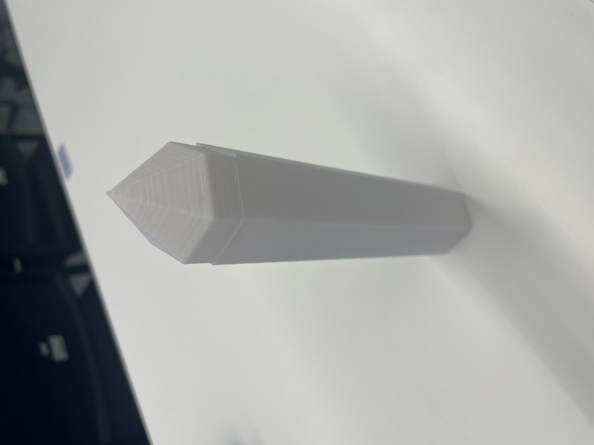

私たちのグループでは、授業前に座席をとるのをスムーズにできるといいねという案が出たため、そのためのものを作ることになりました。
みんな普段カバンを置いたり、筆箱などの荷物をおいているかなと思ったので、それに代わるものを作ります。
皆さんは”バトエン”を知っていますか。
これです！六角形の鉛筆の側面にモンスターの技などが書いてあり、
その鉛筆を机の上で転がせて出た面に書いてある技で攻防する遊びです。
小学生ぐらいの時に自分はやってないけど、友達がやってました。
席をとるときにユーモアさが欲しいなと思ったのと、
席をとるときに自分用のひとつの席だけでなく、複数の席をとることが多いと感じたので、
ひとつのもので複数の席をとれるものを開発しようと思い、このバトエン式のものを思いつきました。

実際にペンが入るような大きさにしました！
fusionで作るとこんな感じ～

イメージとしては、各面に「この席とってます」、「この席と右二つの席とってます」
みたいな感じでできたらいいなって思ってたんですけど、
まあとりあえず作ってみたのがこれです。



作ってみての感想
- 実際問題そんなものに気づかれず、そのものが置かれている席以外とられてしまうのではないか。
- 六面分のデザインを考えなければならないことなどが問題だと感じた。
- 席とってますの文を入れられなかった。
- みんながこれを使ったら懐かしさと机上がにぎやかで面白いかもとおもった。
- 一応ペンを入れられるサイズにしたので、もっとでかくしていっそのことペンケース型にしてしまえば、
存在感が強調できるし、見やすくていいのでは？と感じた。